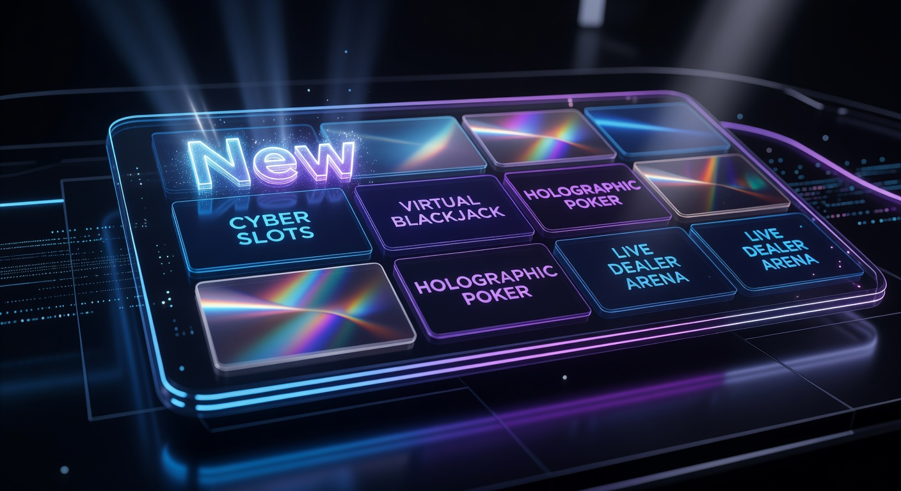
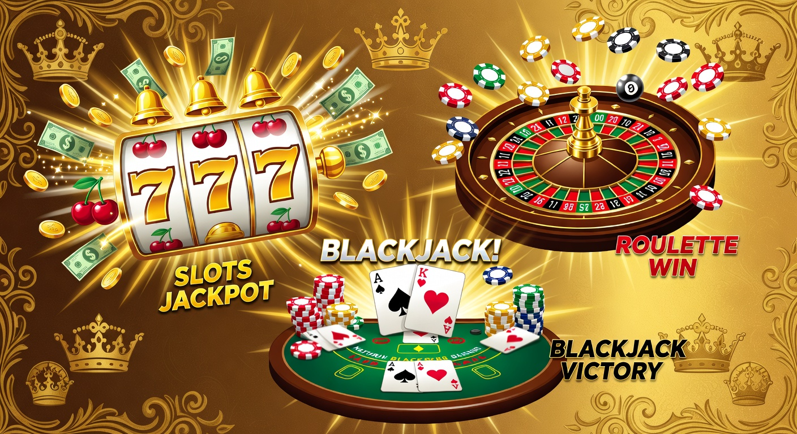
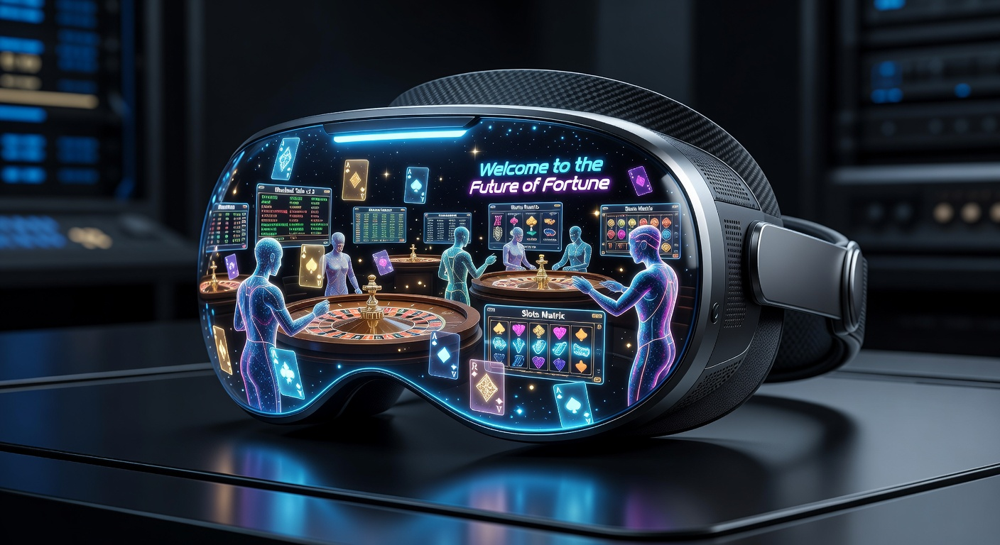

Vind Jouw Ideale Nieuwe Online Casino in 2026
Het landschap van de digitale gokmarkt is in 2026 drastisch veranderd vergeleken met enkele jaren geleden. De opkomst van een nieuwe online casino zorgt voor een frisse wind en dwingt gevestigde namen om hun diensten constant te verbeteren. Voor de Nederlandse speler betekent dit meer keuze, betere technologie en vooral hogere bonussen. In dit uitgebreide artikel duiken we diep in de wereld van de nieuwste aanbieders en waar je op moet letten bij je keuze.
Sinds de legalisering van de markt door de Kansspelautoriteit zijn er tientallen licenties verleend. In 2026 zien we dat de focus is verschoven van simpelweg "aanwezig zijn" naar "excelleren in gebruikerservaring". Elk nieuwe online casino dat vandaag de dag de markt betreedt, moet direct concurreren met reuzen door middel van innovatieve features zoals instant uitbetalingen en gepersonaliseerde spelomgevingen. Dit maakt het voor spelers een spannende tijd om nieuwe platforms te verkennen.
In dit artikel bespreken we niet alleen de voordelen van nieuwe goksites, maar kijken we ook kritisch naar de veiligheid, het spelaanbod en de betrouwbaarheid. We analyseren de invloed van kunstmatige intelligentie op je spelervaring en hoe de Nederlandse regelgeving spelers in 2026 beter beschermt dan ooit tevoren. Of je nu een fan bent van moderne slots of de voorkeur geeft aan een strategisch potje poker, de huidige markt biedt voor ieder wat wils.
Waarom kiezen voor een nieuwkomer op de markt?
Veel spelers vragen zich af waarom ze hun vertrouwde platform zouden verlaten voor een nieuwe online casino. De redenen zijn vaak van technische aard. Nieuwe aanbieders bouwen hun platformen met de allernieuwste software, waardoor de laadtijden korter zijn en de mobiele ervaring superieur is. In 2026 verwachten spelers dat een site vlekkeloos werkt op hun smartphone, en nieuwkomers zijn hierop volledig ingericht.
Daarnaast is er de factor van de welkomstbonus. Om marktaandeel te veroveren, bieden nieuwe sites vaak veel gullere pakketten aan dan casino's die al jarenlang een vaste klantenkring hebben. Dit kan variëren van honderden free spins tot substantiële stortingsbonussen die je bankroll direct een boost geven. Het loont dus letterlijk om af en toe over te stappen naar een nieuwe online casino.
Ten slotte is de klantenservice bij nieuwere partijen vaak proactiever. Omdat elke speler in de beginfase telt, word je sneller en persoonlijker geholpen. De klantenservice is in 2026 bij de meeste topaanbieders 24/7 bereikbaar via live chat, WhatsApp en soms zelfs video-ondersteuning. Dit serviceniveau is een direct gevolg van de hevige concurrentie tussen de verschillende merken.
Innovatieve technologieën en spelervaring
In 2026 is de integratie van Virtual Reality (VR) en Augmented Reality (AR) in een nieuwe online casino niet langer een droom, maar de realiteit. Spelers kunnen nu door een virtuele casinovloer lopen en direct plaatsnemen aan een roulettetafel. Deze immersie zorgt voor een spelervaring die het fysieke casino bijna overbodig maakt. Bovendien zorgen algoritmes voor gepersonaliseerde spelaanbevelingen op basis van jouw eerdere voorkeuren.
Ook op het gebied van graphics hebben de slots een enorme sprong voorwaarts gemaakt. Ontwikkelaars zoals NetEnt en Pragmatic Play leveren spellen die aanvoelen als moderne video games met complexe verhaallijnen en bonuslevels. Een nieuwe online casino zal altijd proberen de nieuwste titels van deze providers als eerste in huis te hebben om spelers te lokken.
Aantrekkelijke welkomstbonussen voor nieuwe spelers
De strijd om de gunst van de Nederlandse gokker wordt vaak gestreden op het gebied van de welkomstbonus. In 2026 zien we dat een nieuwe online casino niet alleen kijkt naar het percentage van de bonus, maar ook naar de eerlijkheid van de voorwaarden. Transparantie over rondspeelvoorwaarden is een must geworden voor elk platform dat serieus genomen wil worden.
Een populaire trend is de no deposit bonus, waarbij je een klein bedrag aan speelgeld of een aantal free spins krijgt puur voor het aanmaken van een account. Hoewel deze bonussen vaak lager zijn, bieden ze de perfecte kans om een nieuwe online casino uit te proberen zonder eigen geld te riskeren. Let altijd goed op de kleine lettertjes voordat je een bonus claimt.
Nieuw Online Casino: Wat maakt ze uniek?

Wat een nieuwe online casino in 2026 echt uniek maakt, is de focus op "gamification". Spelers willen niet alleen maar op een knop drukken; ze willen vooruitgang boeken, levels stijgen en beloningen verdienen voor hun loyaliteit. Dit wordt vaak vormgegeven door middel van een avontuur waarbij je tokens verzamelt die je kunt inwisselen in een interne winkel voor extra bonussen of fysieke prijzen.
Een ander uniek aspect is de snelheid van transacties. Dankzij geavanceerde betaalmethoden en de implementatie van open banking protocollen, kunnen winsten bij een nieuwe online casino vaak binnen enkele minuten op je bankrekening staan. De frustratie van dagenlang wachten op een uitbetaling behoort in 2026 definitief tot het verleden voor de moderne speler.
Bovendien zie je bij een nieuwe online casino vaak een niche-focus. Sommige sites specialiseren zich volledig in live casino games, terwijl anderen de nadruk leggen op sportweddenschappen met zeer competitieve odds. Deze specialisatie stelt hen in staat om een specifiek segment van de markt beter te bedienen dan de algemene grote spelers.
Hoe wij de nieuwste casino's in Nederland beoordelen
Onze experts hanteren een strikt protocol bij het beoordelen van elk nieuwe online casino. We kijken niet alleen naar de flitsende graphics, maar graven diep in de structuur van het bedrijf en de kwaliteit van de software. Betrouwbaarheid staat bij ons altijd op de eerste plaats, zeker in een markt die zo snel groeit als de Nederlandse.
We testen de volledige gebruikersreis: van het registratieproces via iDIN tot de snelheid van de eerste uitbetaling. Een nieuwe online casino krijgt van ons pas een positieve beoordeling als alle facetten van de dienstverlening op orde zijn. Hieronder vallen ook de eerlijkheid van de spellen en de aanwezigheid van gecertificeerde Random Number Generators (RNG).
Veiligheid en KSA-vergunningen
In Nederland is het simpel: zonder een vergunning van de Kansspelautoriteit mag een aanbieder zijn diensten niet aanbieden. Een nieuwe online casino moet aantonen dat zij voldoen aan de strengste eisen op het gebied van anti-witwassen en consumentenbescherming. Wij controleren altijd of het licentienummer op de website van de KSA overeenkomt met de werkelijkheid.
Veiligheid gaat echter verder dan alleen een licentie. We kijken naar SSL-encryptie van de website, de beveiliging van de servers en hoe er met de privacygevoelige gegevens van spelers wordt omgegaan. In 2026 is data-beveiliging cruciaal, en een nieuwe online casino moet gebruikmaken van de modernste technieken om hacks en lekken te voorkomen.
Het spelaanbod en softwareproviders
Het hart van elk nieuwe online casino is het spelaanbod. Wij verwachten in 2026 een bibliotheek van minstens 2.000 verschillende spellen. Dit aanbod moet een gezonde mix zijn van klassieke fruitautomaten, moderne video slots, tafelspellen en een uitgebreid live casino gedeelte. De samenwerking met gerenommeerde providers is hierbij essentieel.
Namen als Pragmatic Play, NetEnt, Evolution Gaming en Play'n GO zijn vaste waarden die kwaliteit garanderen. Een nieuwe online casino dat deze softwarehuizen in de arm neemt, laat zien dat het investeert in een eerlijke en hoogwaardige spelervaring. We letten ook op exclusieve titels die nergens anders te vinden zijn, wat een extra reden kan zijn voor spelers om zich aan te melden.
Onze Top Aanbevelingen voor 2026

Op basis van ons uitgebreide onderzoek hebben we een selectie gemaakt van de meest veelbelovende platforms van dit jaar. Deze sites blinken uit in betrouwbaarheid, spelaanbod en innovatie.
| Casino Brand | Hoogtepunt | Bonus (2026) | Speel Nu |
|---|---|---|---|
| Goldbet | Uitstekend voor sportweddenschappen | 100% tot €250 + 50 spins | Bezoek Goldbet |
| Newlucky | Beste mobiele app ervaring | 200 Free Spins bij eerste storting | Bezoek Newlucky |
| Dragobet | Uniek Live Casino aanbod | Cashback tot 15% wekelijks | Bezoek Dragobet |
| Fortunicabet | Snelste iDEAL uitbetalingen | Bonus pakket tot €500 | Bezoek Fortunicabet |
| Spinorhino | Grootste aanbod nieuwe slots | Exclusieve VIP beloningen | Bezoek Spinorhino |
Nieuwste online casino 2026: De trends

In 2026 zien we dat een nieuwe online casino steeds vaker inzet op sociale interactie. Het is niet langer een eenzame bezigheid. Spelers kunnen deelnemen aan gedeelde bonussen, chatten met medespelers tijdens live sessies en zelfs hun eigen speelstrategieën delen op interne sociale feeds. Deze gemeenschapszin verhoogt de retentie en maakt het gokken plezieriger.
Een andere opvallende trend is de opkomst van "Sustainability" in de gokwereld. Een nieuwe online casino profileert zich steeds vaker door een deel van de winst te doneren aan doelen voor gokverslavingspreventie of milieuvriendelijke projecten. Spelers in 2026 zijn bewuster en kiezen vaker voor een platform dat ook een maatschappelijke verantwoordelijkheid draagt.
Op technisch vlak is de integratie van crypto betaalmethoden in het buitenland een enorme trend, maar in de Nederlandse gereguleerde markt blijft dit een grijs gebied. Toch zien we dat een nieuwe online casino experimenteert met blockchain-technologie voor meer transparantie in speluitkomsten, wat het vertrouwen van de consument ten goede komt.
Populaire Betaalmethoden bij de Nieuwste Aanbieders
Zonder soepele betalingsverwerking kan een nieuwe online casino niet overleven in 2026. Nederlandse spelers zijn gewend aan het gemak van iDEAL, en dit blijft dan ook de absolute standaard. Elke nieuwe site die de Nederlandse markt betreedt, moet deze methode vanaf dag één ondersteunen om serieus genomen te worden door het grote publiek.
Echter, we zien ook een verschuiving naar alternatieve methoden. Veel spelers maken inmiddels gebruik van e-wallets zoals PayPal, Skrill of Neteller voor extra privacy en snelheid. Het voordeel van deze methoden is dat winsten vaak direct na goedkeuring van het casino beschikbaar zijn in je wallet. Een modern nieuwe online casino biedt een breed scala aan opties aan.
iDEAL en snelle bankoverschrijvingen
De dominantie van iDEAL in Nederland is onbetwist. In 2026 is de integratie met mobiel bankieren apps zo naadloos dat een storting binnen enkele seconden is voltooid. Bovendien is de veiligheid gegarandeerd door de eigen bank van de speler. Een nieuwe online casino dat zich richt op de Nederlandse markt, zet iDEAL dan ook pontificaal op de homepagina.
Naast iDEAL zien we de opkomst van "Instant Banking" diensten zoals Trustly en Brite. Deze maken gebruik van dezelfde technologie, maar zijn vaak nog sneller met het verwerken van uitgaande betalingen. Voor een nieuwe online casino is het een prioriteit om uitbetalingen binnen 15 minuten te verwerken, iets wat met deze nieuwe technieken mogelijk is geworden.
De opkomst van crypto in het buitenland vs Nederland
Hoewel de Nederlandse wetgeving in 2026 nog steeds terughoudend is met betrekking tot directe crypto stortingen bij gelicentieerde aanbieders, is de vraag van spelers groot. In een nieuwe online casino buitenland is het betalen met Bitcoin of Ethereum inmiddels de standaard geworden. Deze sites bieden vaak een hogere mate van anonimiteit en grotere bonussen.
In Nederland zien we echter dat legale aanbieders zoeken naar manieren om de blockchain-technologie te benutten zonder de strenge regels van de KSA te overtreden. Het blijft een interessant spanningsveld. Voorlopig raden wij spelers aan om bij voorkeur legale methoden zoals iDEAL te gebruiken bij een nieuwe online casino in Nederland om juridische en financiële complicaties te voorkomen.
Nieuwe Online Casino vs Gevestigde Namen
De strijd tussen een nieuwe online casino en de gevestigde namen zoals Kansino, Betnation of LeoVegas is in 2026 intenser dan ooit. Gevestigde namen hebben de naam en het budget voor grote marketingcampagnes, maar ze zijn vaak ook trager in het doorvoeren van radicale innovaties. Hun platformen rusten op oudere codebases die minder flexibel zijn.
Een nieuwe online casino daarentegen kan direct inspelen op de nieuwste behoeften. Of het nu gaat om een specifiek type cashback bonus of een uniek toernooi-formaat, zij kunnen sneller schakelen. Toch hebben de grote namen een voordeel: een jarenlange reputatie van betrouwbaarheid en vaak een grotere diepgang in hun sportweddenschappen aanbod.
In de onderstaande lijst zie je enkele punten waarin nieuwe casino's vaak winnen van de oude garde:
- Modernere en snellere mobiele interfaces.
- Hogere en creatievere bonussen voor nieuwe spelers.
- Persoonlijkere klantbenadering en snelle chat-support.
- Snellere adoptie van nieuwe softwareproviders en niche spellen.
Wetgeving en Verantwoord Spelen
De regelgeving rondom gokken in Nederland is in 2026 strenger maar ook duidelijker geworden. De focus ligt volledig op de bescherming van de speler. Elk nieuwe online casino is verplicht om uitgebreide tools voor verantwoord spelen aan te bieden. Dit omvat limieten voor stortingen, tijdslimieten en verplichte realiteitschecks tijdens het spelen.
De Kansspelautoriteit houdt nauwlettend toezicht op de marketinguitingen van gokbedrijven. Reclames gericht op jongvolwassenen zijn streng verboden en bonussen mogen niet op een misleidende manier gepresenteerd worden. Als een nieuwe online casino deze regels overtreedt, riskeren zij miljoenenboetes of zelfs het intrekken van hun licentie, wat de markt een stuk veiliger maakt voor de consument.
De rol van het CRUKS-register
Het Centraal Register Uitsluiting Kansspelen (CRUKS) is de hoeksteen van het Nederlandse preventiebeleid. Elke keer dat je inlogt bij een nieuwe online casino, wordt je BSN-nummer gecontroleerd tegen deze database. Sta je geregistreerd? Dan krijg je direct geen toegang meer tot legale Nederlandse goksites. Dit systeem heeft in 2026 duizenden spelers geholpen om een broodnodige pauze te nemen.
Inschrijven bij CRUKS kan vrijwillig, maar het kan ook opgelegd worden door een instelling of naaste als er sprake is van problematisch speelgedrag. Een nieuwe online casino moet ook proactief handelen wanneer zij merken dat een speler zijn eigen grenzen overschrijdt. De detectiesoftware voor problematisch speelgedrag is in 2026 verplicht voor alle licentiehouders.
Nieuwe Online Casino Buitenland: De risico's en kansen
Hoewel de focus vaak ligt op de lokale markt, kijken veel spelers over de grens naar een nieuwe online casino buitenland. Deze sites opereren vaak onder licenties van Malta (MGA) of Curaçao. Het voordeel van deze aanbieders is dat zij soms spellen aanbieden die in Nederland nog niet beschikbaar zijn, en vaak hebben zij geen limieten op de grootte van bonussen.
Echter, er kleven aanzienlijke risico's aan. Bij een geschil met een nieuwe online casino buiten de Nederlandse jurisdictie, heb je als speler weinig tot geen poot om op te staan. De bescherming van de Nederlandse wet geldt hier niet. Bovendien ontbreekt de koppeling met CRUKS, wat risicovol kan zijn voor kwetsbare spelers. Wees dus altijd uiterst voorzichtig als je besluit buiten de Nederlandse grenzen te spelen.
Nieuw Casino Zonder Registratie: Hoe werkt het?
Een van de populairste concepten in 2026 is het nieuw casino zonder registratie. In plaats van een langdurig formulier in te vullen, maak je simpelweg een storting via iDEAL of Trustly. Tijdens dit proces worden je identiteitsgegevens veilig via je bank geverifieerd (via iDIN). Hierdoor wordt er op de achtergrond een account voor je aangemaakt zonder dat je zelf gegevens hoeft in te voeren.
Dit concept biedt ongekende snelheid. Je kunt binnen 30 seconden beginnen met spelen bij een nieuwe online casino. Ook bij het uitbetalen is er geen gedoe met het opsturen van kopieën van je paspoort of energierekening, aangezien je al geverifieerd bent via je bank. Dit type casino is perfect voor de speler die waarde hecht aan privacy en efficiëntie.
Nieuw Live Casino: Realistische ervaringen
De sector van het live casino heeft de afgelopen jaren de grootste transformatie ondergaan. In 2026 is de kwaliteit van de streams standaard 4K of zelfs 8K, en zijn de dealers getrainde entertainers. Een nieuwe online casino investeert zwaar in unieke studio's die eruitzien als filmsets, om spelers een onvergetelijke ervaring te bieden.
Populaire spellen zoals Lightning Roulette en Crazy Time zijn geëvolueerd naar nog complexere game shows met enorme multipliers. Bovendien zien we steeds meer Nederlandstalige tafels. Bij een top nieuwe online casino kun je in je eigen taal communiceren met de dealer en medespelers, wat de drempel om deel te nemen verlaagt en de gezelligheid verhoogt.
Bonussen En Inzetvoorwaarden uitgelegd
Het begrijpen van de voorwaarden is essentieel bij elk nieuwe online casino. In 2026 zijn de regels strenger geworden, waardoor casino's verplicht zijn om de belangrijkste voorwaarden direct bij de bonus te vermelden. De inzetvoorwaarde (wagering requirement) bepaalt hoe vaak je een bonusbedrag moet rondspelen voordat het echt geld wordt dat je kunt opnemen.
Een inzetvoorwaarde van 35x wordt in 2026 als marktconform beschouwd. Let echter ook op de "game contribution". Niet elk spel telt even zwaar mee voor het rondspelen. Waar slots vaak voor 100% meetellen, dragen tafelspellen zoals blackjack soms maar voor 10% bij. Een transparant nieuwe online casino zal hier altijd duidelijk over communiceren in hun bonusbeleid.
Reloadbonus
De welkomstbonus is slechts het begin. Om spelers vast te houden, bieden veel platforms een reloadbonus aan. Dit is een extra percentage bovenop je tweede, derde of zelfs tiende storting. In 2026 zien we dat een nieuwe online casino deze bonussen vaak koppelt aan specifieke dagen van de week, zoals de "Vrijdagmiddag Reload", om het weekend goed te beginnen.
Cashback Bonus
Voor de serieuze speler is de cashback bonus vaak interessanter dan een stortingsbonus. Hierbij krijg je een percentage van je netto verliezen over een bepaalde periode terug in je account. Het grote voordeel bij een nieuwe online casino is dat deze cashback vaak direct als echt geld wordt uitgekeerd, zonder dat je het nog hoeft rond te spelen. Het dient als een soort verzekering voor je spel.
No Deposit Bonus
Hoewel ze zeldzamer worden vanwege de strengere regelgeving, is de no deposit bonus nog steeds de heilige graal. Het is de ultieme manier voor een nieuwe online casino om te bewijzen dat hun product goed is. Spelers kunnen zonder risico de software testen en zelfs een klein bedrag winnen. Let wel: de maximale winst uit een dergelijke bonus is vaak beperkt.
GetLucky en andere opkomende namen
In 2026 horen we veel over nieuwe merken zoals GetLucky, die de markt bestormen met een focus op mobiele spelers. Maar ook namen zoals Tonybet en Hard Rock Casino hebben hun positie in Nederland verstevigd door hun internationale ervaring te combineren met lokale kennis. Elk van deze merken brengt iets unieks naar de tafel, van enorme jackpots tot een diepgaande sportsbook-ervaring.
Het is ook interessant om te zien hoe merken zoals Starcasino en ComeOn blijven vernieuwen om relevant te blijven. Zij kopiëren vaak de beste features van een nieuwe online casino om hun eigen trouwe achterban tevreden te houden. Voor de speler is deze gezonde rivaliteit alleen maar gunstig, omdat het de algemene kwaliteit van de markt omhoog stuwt.
Is online gokken legaal in Nederland?
Ja, online gokken is volledig legaal in Nederland mits de aanbieder beschikt over een vergunning van de KSA. In 2026 is de markt volwassen en zijn de kinderziektes van de vroege legalisatie (rond 2021) verdwenen. De regels zijn helder: gokken mag pas vanaf 18 jaar, en bonussen zijn pas beschikbaar voor spelers van 24 jaar en ouder. Dit laatste is een specifiek Nederlandse regel om jongvolwassenen te beschermen.
Wanneer je speelt bij een legaal nieuwe online casino, ben je verzekerd van een eerlijk verloop. De software wordt regelmatig geaudit door onafhankelijke keuringsinstanties zoals eCOGRA of iTech Labs. Bovendien wordt de kansspelbelasting in 2026 meestal direct door het casino afgedragen, waardoor jij je winsten netto ontvangt. Dit maakt legaal gokken in Nederland niet alleen veiliger, maar ook fiscaal een stuk overzichtelijker.
Aanbod nieuwste Nederlandse online casino's
Het aanbod bij de nieuwste partijen is in 2026 indrukwekkender dan ooit. We zien een enorme toename in het aantal "Megaways" slots en spellen met een hoge variantie. Dit type spel is enorm populair onder Nederlanders vanwege de potentie voor enorme uitbetalingen in een enkele draai. Een nieuwe online casino zal altijd de nieuwste releases van Pragmatic Play direct prominent tonen.
Daarnaast is de integratie van e-sports wedden een grote stap geweest. Steeds meer casino's bieden de mogelijkheid om te wedden op toernooien van games als League of Legends en Counter-Strike. Dit trekt een nieuwe generatie spelers aan die minder geïnteresseerd zijn in traditionele sporten. Het moderne nieuwe online casino is hiermee veranderd in een compleet entertainment platform.
Toekomstverwachtingen voor de Nederlandse gokmarkt
Kijkend naar de rest van 2026 en verder, verwachten we dat de consolidatie van de markt zal doorzetten. Grotere partijen zullen kleinere nieuwe online casino merken opkopen om hun technologie te integreren. Tegelijkertijd zal de regelgeving waarschijnlijk nog strikter worden op het gebied van advertentie-uitingen op sociale media, om de jeugd nog beter te beschermen.
De technologische vooruitgang zal niet stoppen. We verwachten dat AI-gestuurde klantenservice nog menselijker zal worden en dat blockchain-gebaseerde casino's uiteindelijk hun weg naar de legale markt zullen vinden. Het belangrijkste is dat de focus op "Verantwoord Spelen" de norm blijft. De Kansspelautoriteit speelt hierin een cruciale rol als waakhond die de belangen van de speler altijd boven die van de casino-exploitanten stelt.
Is gokken met cryptovaluta veilig?
Dit is een veelgestelde vraag in 2026. Hoewel technische veiligheid van blockchain-transacties erg hoog is, hangt de veiligheid van het gokken zelf af van het casino. Een nieuwe online casino dat alleen crypto accepteert en geen erkende licentie heeft, moet je wantrouwen. Er is geen enkele garantie dat de spellen eerlijk verlopen of dat je je geld ooit terugziet.
Voor de gemiddelde speler is het veiliger om te wachten tot de Nederlandse gereguleerde markt crypto betalingen officieel toestaat onder toezicht van de KSA. Tot die tijd bieden traditionele betaalmethoden zoals iDEAL veel meer zekerheid en consumentenbescherming. Veiligheid gaat immers over meer dan alleen de transactie; het gaat over het hele ecosysteem waarin je je geld inzet.
Over ons en Onze Missie
Wij zijn een team van experts met jarenlange ervaring in de internationale en Nederlandse gokindustrie. Onze missie is simpel: transparantie brengen in de wereld van online gokken. In een jaar als 2026, waarin het aanbod overweldigend is, helpen wij spelers om het kaf van het koren te scheiden. Elk nieuwe online casino dat wij aanbevelen, is door onszelf uitvoerig getest met echt geld.
Onze beoordelingen zijn onafhankelijk en objectief. We worden niet betaald door casino's om een hogere score te geven; onze inkomsten komen uit affiliate-partnerschappen die onze integriteit niet beïnvloeden. Jouw vertrouwen is ons hoogste goed. Daarom blijven we onze reviews constant updaten met de laatste informatie over bonussen, wetgeving en nieuwe spellen op de markt.
Veelgestelde Vragen over Nieuwe Goksites
Wat is het beste nieuwe online casino van 2026?
Hoewel dit afhangt van je persoonlijke voorkeur, scoren Goldbet en Fortunicabet momenteel het hoogst op onze lijst vanwege hun snelle uitbetalingen en uitstekende spelaanbod. Een nieuwe online casino moet constant innoveren om deze koppositie vast te houden.
Zijn mijn gegevens veilig bij een nieuwe aanbieder?
Ja, zolang je kiest voor een nieuwe online casino met een licentie van de Nederlandse Kansspelautoriteit. Zij moeten voldoen aan strenge privacyregels en moderne beveiligingstechnieken gebruiken om je data te beschermen.
Kan ik ook gratis spellen uitproberen?
Bijna elk nieuwe online casino biedt een "demo mode" aan voor hun slots. Hierdoor kun je de spelmechanieken leren kennen zonder echt geld in te zetten. Live casino games zijn echter meestal alleen beschikbaar met echt geld.
Hoe werkt het uitsluiten van gokken via CRUKS?
Je kunt je via de website van de KSA eenvoudig inschrijven in het CRUKS-register. Dit geldt direct voor alle legale fysieke en online casino's in Nederland. Elk nieuwe online casino controleert je status bij elke inlogpoging.
Waarom zijn de bonussen bij nieuwe casino's vaak hoger?
Een nieuwe online casino moet zichzelf bewijzen in een zeer concurrerende markt. Door een hoge welkomstbonus aan te bieden, verlagen ze de drempel voor spelers om hun platform uit te proberen in plaats van bij hun oude vertrouwde site te blijven.
Wil je meer weten over de geschiedenis van gokken in Nederland? Bekijk dan deze uitgebreide Wikipedia-pagina over kansspelen voor meer achtergrondinformatie. Of lees over de wereldwijde trends in de casino-industrie op Forbes om te zien hoe Nederland zich verhoudt tot de rest van de wereld.

Expert in online casino's en digitaal gokken met meer dan 8 jaar ervaring in de sector.